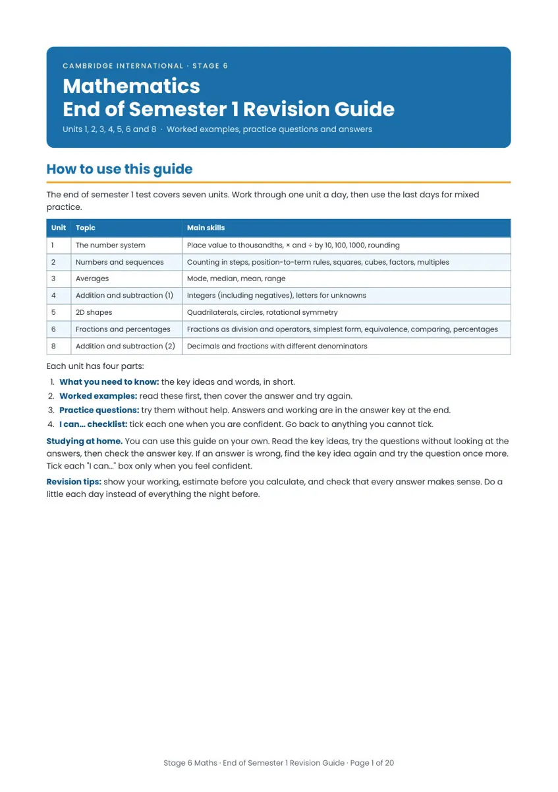
C A M B R I D G E I N T E R N A T I O N A L · S T A G E 6
Mathematics
End of Semester 1 Revision Guide
Units 1, 2, 3, 4, 5, 6 and 8 · Worked examples, practice questions and answers
How to use this guide
The end of semester 1 test covers seven units. Work through one unit a day, then use the last days for mixed
practice.
Unit
Topic
Main skills
1
The number system
Place value to thousandths, × and ÷ by 10, 100, 1000, rounding
2
Numbers and sequences
Counting in steps, position-to-term rules, squares, cubes, factors, multiples
3
Averages
Mode, median, mean, range
4
Addition and subtraction (1)
Integers (including negatives), letters for unknowns
5
2D shapes
Quadrilaterals, circles, rotational symmetry
6
Fractions and percentages
Fractions as division and operators, simplest form, equivalence, comparing, percentages
8
Addition and subtraction (2)
Decimals and fractions with different denominators
Each unit has four parts:
1. What you need to know: the key ideas and words, in short.
2. Worked examples: read these first, then cover the answer and try again.
3. Practice questions: try them without help. Answers and working are in the answer key at the end.
4. I can… checklist: tick each one when you are confident. Go back to anything you cannot tick.
Studying at home. You can use this guide on your own. Read the key ideas, try the questions without looking at the
answers, then check the answer key. If an answer is wrong, find the key idea again and try the question once more.
Tick each "I can…" box only when you feel confident.
Revision tips: show your working, estimate before you calculate, and check that every answer makes sense. Do a
little each day instead of everything the night before.
Stage 6 Maths · End of Semester 1 Revision Guide · Page 1 of 20
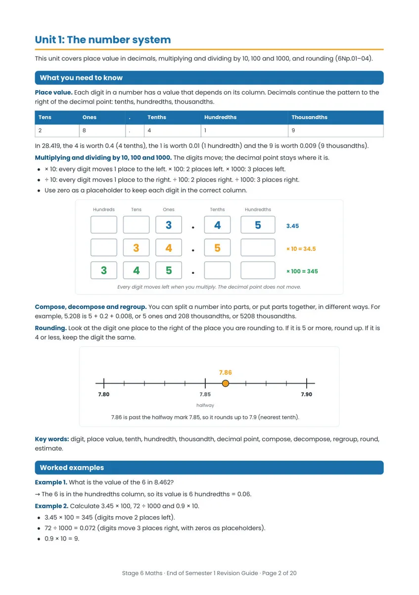
Unit 1: The number system
This unit covers place value in decimals, multiplying and dividing by 10, 100 and 1000, and rounding (6Np.01–04).
What you need to know
Place value. Each digit in a number has a value that depends on its column. Decimals continue the pattern to the
right of the decimal point: tenths, hundredths, thousandths.
Tens
Ones
.
Tenths
Hundredths
Thousandths
2
8
.
4
1
9
In 28.419, the 4 is worth 0.4 (4 tenths), the 1 is worth 0.01 (1 hundredth) and the 9 is worth 0.009 (9 thousandths).
Multiplying and dividing by 10, 100 and 1000. The digits move; the decimal point stays where it is.
× 10: every digit moves 1 place to the left. × 100: 2 places left. × 1000: 3 places left.
÷ 10: every digit moves 1 place to the right. ÷ 100: 2 places right. ÷ 1000: 3 places right.
Use zero as a placeholder to keep each digit in the correct column.
Hundreds
Tens
Ones
Tenths
Hundredths
.
3
4
5
3.45
.
3
4
5
× 10 = 34.5
.
3
4
5
× 100 = 345
Every digit moves left when you multiply. The decimal point does not move.
Compose, decompose and regroup. You can split a number into parts, or put parts together, in different ways. For
example, 5.208 is 5 + 0.2 + 0.008, or 5 ones and 208 thousandths, or 5208 thousandths.
Rounding. Look at the digit one place to the right of the place you are rounding to. If it is 5 or more, round up. If it is
4 or less, keep the digit the same.
7.86
7.80
7.85
7.90
halfway
7.86 is past the halfway mark 7.85, so it rounds up to 7.9 (nearest tenth).
Key words: digit, place value, tenth, hundredth, thousandth, decimal point, compose, decompose, regroup, round,
estimate.
Worked examples
Example 1. What is the value of the 6 in 8.462?
→ The 6 is in the hundredths column, so its value is 6 hundredths = 0.06.
Example 2. Calculate 3.45 × 100, 72 ÷ 1000 and 0.9 × 10.
3.45 × 100 = 345 (digits move 2 places left).
72 ÷ 1000 = 0.072 (digits move 3 places right, with zeros as placeholders).
0.9 × 10 = 9.
Stage 6 Maths · End of Semester 1 Revision Guide · Page 2 of 20
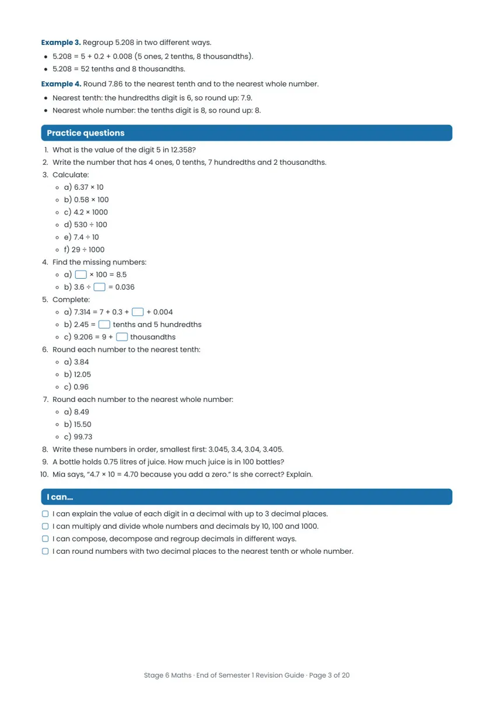
Example 3. Regroup 5.208 in two different ways.
5.208 = 5 + 0.2 + 0.008 (5 ones, 2 tenths, 8 thousandths).
5.208 = 52 tenths and 8 thousandths.
Example 4. Round 7.86 to the nearest tenth and to the nearest whole number.
Nearest tenth: the hundredths digit is 6, so round up: 7.9.
Nearest whole number: the tenths digit is 8, so round up: 8.
Practice questions
1. What is the value of the digit 5 in 12.358?
2. Write the number that has 4 ones, 0 tenths, 7 hundredths and 2 thousandths.
3. Calculate:
a) 6.37 × 10
b) 0.58 × 100
c) 4.2 × 1000
d) 530 ÷ 100
e) 7.4 ÷ 10
f) 29 ÷ 1000
4. Find the missing numbers:
a)
× 100 = 8.5
b) 3.6 ÷
= 0.036
5. Complete:
a) 7.314 = 7 + 0.3 +
+ 0.004
b) 2.45 =
tenths and 5 hundredths
c) 9.206 = 9 +
thousandths
6. Round each number to the nearest tenth:
a) 3.84
b) 12.05
c) 0.96
7. Round each number to the nearest whole number:
a) 8.49
b) 15.50
c) 99.73
8. Write these numbers in order, smallest first: 3.045, 3.4, 3.04, 3.405.
9. A bottle holds 0.75 litres of juice. How much juice is in 100 bottles?
10. Mia says, “4.7 × 10 = 4.70 because you add a zero.” Is she correct? Explain.
I can…
I can explain the value of each digit in a decimal with up to 3 decimal places.
I can multiply and divide whole numbers and decimals by 10, 100 and 1000.
I can compose, decompose and regroup decimals in different ways.
I can round numbers with two decimal places to the nearest tenth or whole number.
Stage 6 Maths · End of Semester 1 Revision Guide · Page 3 of 20
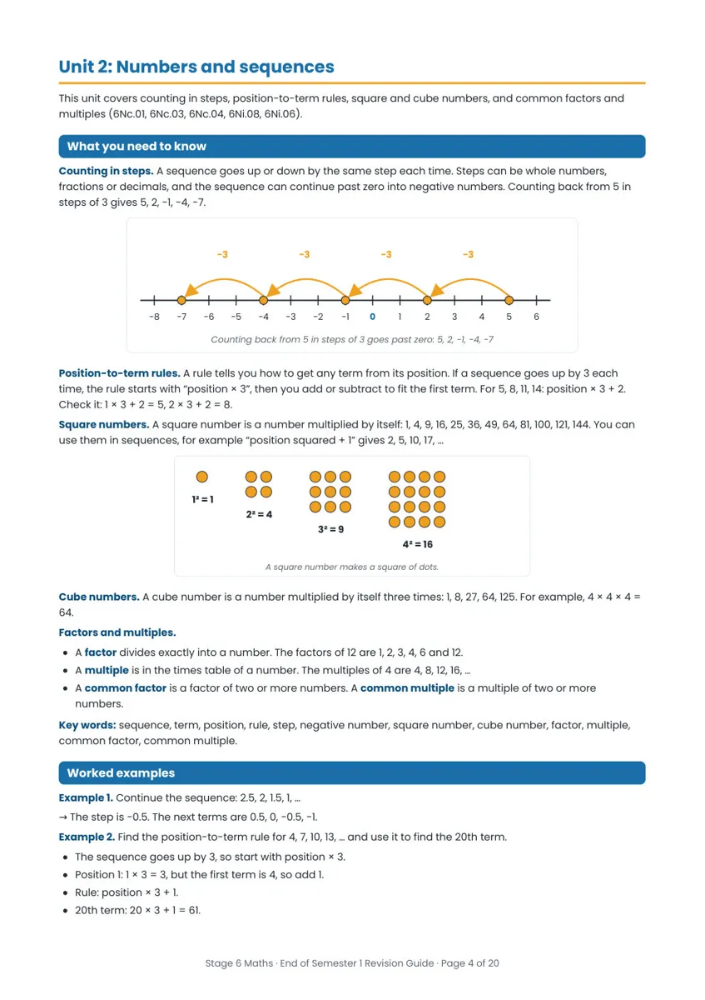
Unit 2: Numbers and sequences
This unit covers counting in steps, position-to-term rules, square and cube numbers, and common factors and
multiples (6Nc.01, 6Nc.03, 6Nc.04, 6Ni.08, 6Ni.06).
What you need to know
Counting in steps. A sequence goes up or down by the same step each time. Steps can be whole numbers,
fractions or decimals, and the sequence can continue past zero into negative numbers. Counting back from 5 in
steps of 3 gives 5, 2, −1, −4, −7.
−3
−3
−3
−3
−8
−7
−6
−5
−4
−3
−2
−1
0
1
2
3
4
5
6
Counting back from 5 in steps of 3 goes past zero: 5, 2, −1, −4, −7
Position-to-term rules. A rule tells you how to get any term from its position. If a sequence goes up by 3 each
time, the rule starts with “position × 3”, then you add or subtract to fit the first term. For 5, 8, 11, 14: position × 3 + 2.
Check it: 1 × 3 + 2 = 5, 2 × 3 + 2 = 8.
Square numbers. A square number is a number multiplied by itself: 1, 4, 9, 16, 25, 36, 49, 64, 81, 100, 121, 144. You can
use them in sequences, for example “position squared + 1” gives 2, 5, 10, 17, …
1² = 1
2² = 4
3² = 9
4² = 16
A square number makes a square of dots.
Cube numbers. A cube number is a number multiplied by itself three times: 1, 8, 27, 64, 125. For example, 4 × 4 × 4 =
64.
Factors and multiples.
A factor divides exactly into a number. The factors of 12 are 1, 2, 3, 4, 6 and 12.
A multiple is in the times table of a number. The multiples of 4 are 4, 8, 12, 16, …
A common factor is a factor of two or more numbers. A common multiple is a multiple of two or more
numbers.
Key words: sequence, term, position, rule, step, negative number, square number, cube number, factor, multiple,
common factor, common multiple.
Worked examples
Example 1. Continue the sequence: 2.5, 2, 1.5, 1, …
→ The step is −0.5. The next terms are 0.5, 0, −0.5, −1.
Example 2. Find the position-to-term rule for 4, 7, 10, 13, … and use it to find the 20th term.
The sequence goes up by 3, so start with position × 3.
Position 1: 1 × 3 = 3, but the first term is 4, so add 1.
Rule: position × 3 + 1.
20th term: 20 × 3 + 1 = 61.
Stage 6 Maths · End of Semester 1 Revision Guide · Page 4 of 20
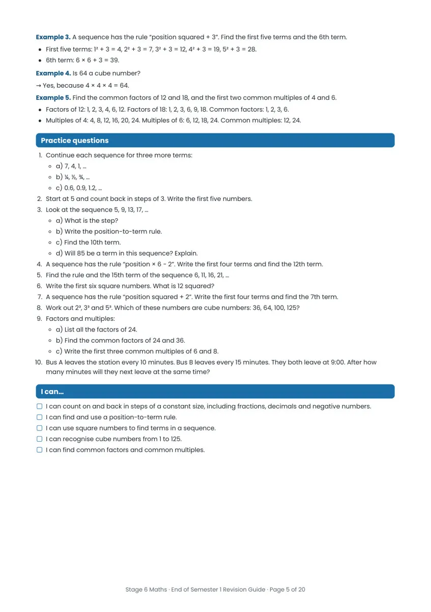
Example 3. A sequence has the rule “position squared + 3”. Find the first five terms and the 6th term.
First five terms: 1² + 3 = 4, 2² + 3 = 7, 3² + 3 = 12, 4² + 3 = 19, 5² + 3 = 28.
6th term: 6 × 6 + 3 = 39.
Example 4. Is 64 a cube number?
→ Yes, because 4 × 4 × 4 = 64.
Example 5. Find the common factors of 12 and 18, and the first two common multiples of 4 and 6.
Factors of 12: 1, 2, 3, 4, 6, 12. Factors of 18: 1, 2, 3, 6, 9, 18. Common factors: 1, 2, 3, 6.
Multiples of 4: 4, 8, 12, 16, 20, 24. Multiples of 6: 6, 12, 18, 24. Common multiples: 12, 24.
Practice questions
1. Continue each sequence for three more terms:
a) 7, 4, 1, …
b) ¼, ½, ¾, …
c) 0.6, 0.9, 1.2, …
2. Start at 5 and count back in steps of 3. Write the first five numbers.
3. Look at the sequence 5, 9, 13, 17, …
a) What is the step?
b) Write the position-to-term rule.
c) Find the 10th term.
d) Will 85 be a term in this sequence? Explain.
4. A sequence has the rule “position × 6 − 2”. Write the first four terms and find the 12th term.
5. Find the rule and the 15th term of the sequence 6, 11, 16, 21, …
6. Write the first six square numbers. What is 12 squared?
7. A sequence has the rule “position squared + 2”. Write the first four terms and find the 7th term.
8. Work out 2³, 3³ and 5³. Which of these numbers are cube numbers: 36, 64, 100, 125?
9. Factors and multiples:
a) List all the factors of 24.
b) Find the common factors of 24 and 36.
c) Write the first three common multiples of 6 and 8.
10. Bus A leaves the station every 10 minutes. Bus B leaves every 15 minutes. They both leave at 9:00. After how
many minutes will they next leave at the same time?
I can…
I can count on and back in steps of a constant size, including fractions, decimals and negative numbers.
I can find and use a position-to-term rule.
I can use square numbers to find terms in a sequence.
I can recognise cube numbers from 1 to 125.
I can find common factors and common multiples.
Stage 6 Maths · End of Semester 1 Revision Guide · Page 5 of 20
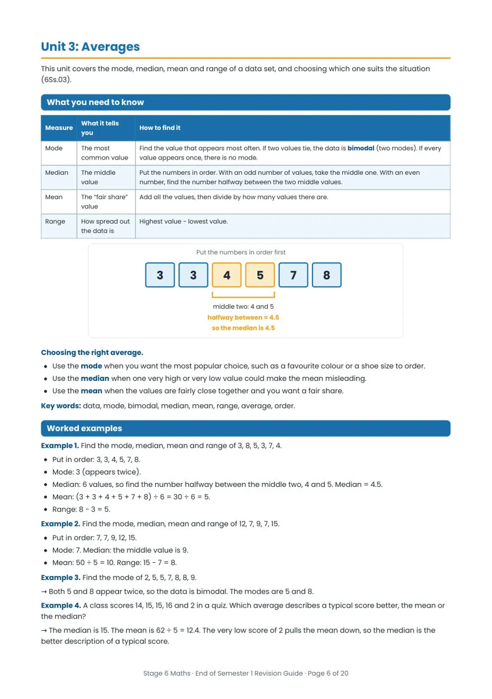
Unit 3: Averages
This unit covers the mode, median, mean and range of a data set, and choosing which one suits the situation
(6Ss.03).
What you need to know
What it tells
Measure
How to find it
you
Mode
The most
common value
Median
The middle
value
Mean
The “fair share”
value
Range
How spread out
the data is
Find the value that appears most often. If two values tie, the data is bimodal (two modes). If every
value appears once, there is no mode.
Put the numbers in order. With an odd number of values, take the middle one. With an even
number, find the number halfway between the two middle values.
Add all the values, then divide by how many values there are.
Highest value − lowest value.
Put the numbers in order first
3
3
4
5
7
8
middle two: 4 and 5
halfway between = 4.5
so the median is 4.5
Choosing the right average.
Use the mode when you want the most popular choice, such as a favourite colour or a shoe size to order.
Use the median when one very high or very low value could make the mean misleading.
Use the mean when the values are fairly close together and you want a fair share.
Key words: data, mode, bimodal, median, mean, range, average, order.
Worked examples
Example 1. Find the mode, median, mean and range of 3, 8, 5, 3, 7, 4.
Put in order: 3, 3, 4, 5, 7, 8.
Mode: 3 (appears twice).
Median: 6 values, so find the number halfway between the middle two, 4 and 5. Median = 4.5.
Mean: (3 + 3 + 4 + 5 + 7 + 8) ÷ 6 = 30 ÷ 6 = 5.
Range: 8 − 3 = 5.
Example 2. Find the mode, median, mean and range of 12, 7, 9, 7, 15.
Put in order: 7, 7, 9, 12, 15.
Mode: 7. Median: the middle value is 9.
Mean: 50 ÷ 5 = 10. Range: 15 − 7 = 8.
Example 3. Find the mode of 2, 5, 5, 7, 8, 8, 9.
→ Both 5 and 8 appear twice, so the data is bimodal. The modes are 5 and 8.
Example 4. A class scores 14, 15, 15, 16 and 2 in a quiz. Which average describes a typical score better, the mean or
the median?
→ The median is 15. The mean is 62 ÷ 5 = 12.4. The very low score of 2 pulls the mean down, so the median is the
better description of a typical score.
Stage 6 Maths · End of Semester 1 Revision Guide · Page 6 of 20
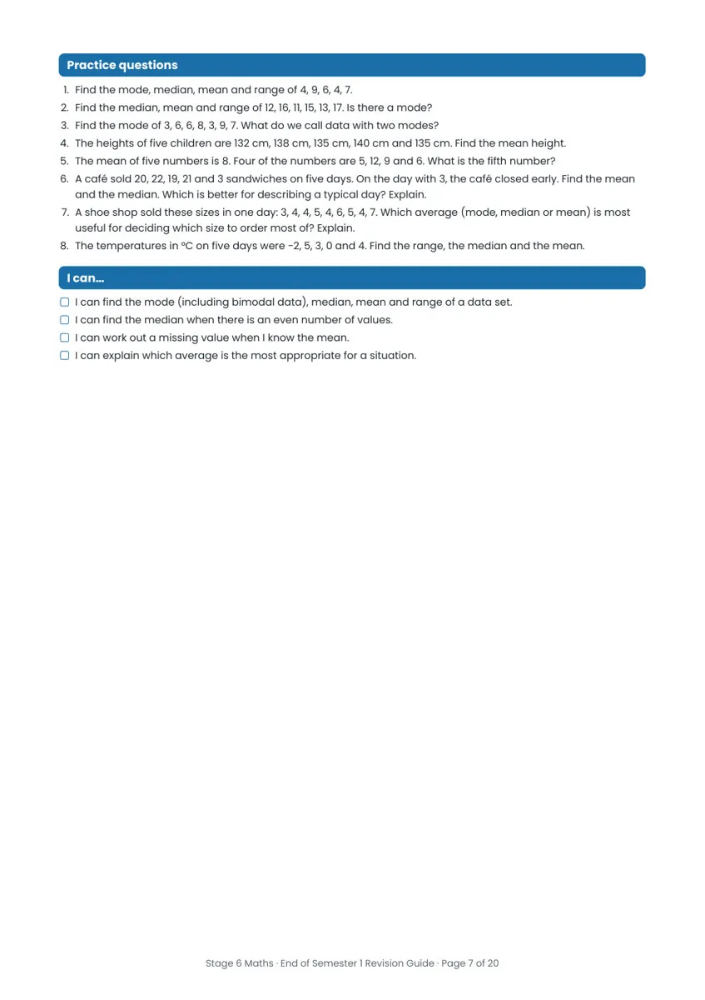
Practice questions
1. Find the mode, median, mean and range of 4, 9, 6, 4, 7.
2. Find the median, mean and range of 12, 16, 11, 15, 13, 17. Is there a mode?
3. Find the mode of 3, 6, 6, 8, 3, 9, 7. What do we call data with two modes?
4. The heights of five children are 132 cm, 138 cm, 135 cm, 140 cm and 135 cm. Find the mean height.
5. The mean of five numbers is 8. Four of the numbers are 5, 12, 9 and 6. What is the fifth number?
6. A café sold 20, 22, 19, 21 and 3 sandwiches on five days. On the day with 3, the café closed early. Find the mean
and the median. Which is better for describing a typical day? Explain.
7. A shoe shop sold these sizes in one day: 3, 4, 4, 5, 4, 6, 5, 4, 7. Which average (mode, median or mean) is most
useful for deciding which size to order most of? Explain.
8. The temperatures in °C on five days were −2, 5, 3, 0 and 4. Find the range, the median and the mean.
I can…
I can find the mode (including bimodal data), median, mean and range of a data set.
I can find the median when there is an even number of values.
I can work out a missing value when I know the mean.
I can explain which average is the most appropriate for a situation.
Stage 6 Maths · End of Semester 1 Revision Guide · Page 7 of 20
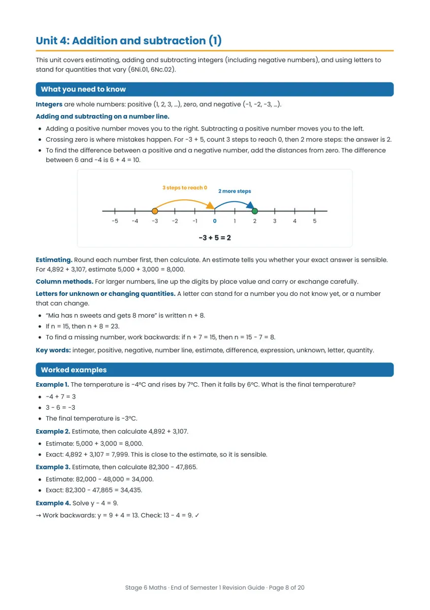
Unit 4: Addition and subtraction (1)
This unit covers estimating, adding and subtracting integers (including negative numbers), and using letters to
stand for quantities that vary (6Ni.01, 6Nc.02).
What you need to know
Integers are whole numbers: positive (1, 2, 3, …), zero, and negative (−1, −2, −3, …).
Adding and subtracting on a number line.
Adding a positive number moves you to the right. Subtracting a positive number moves you to the left.
Crossing zero is where mistakes happen. For −3 + 5, count 3 steps to reach 0, then 2 more steps: the answer is 2.
To find the difference between a positive and a negative number, add the distances from zero. The difference
between 6 and −4 is 6 + 4 = 10.
3 steps to reach 0
2 more steps
−5
−4
−3
−2
−1
0
1
2
3
4
5
−3 + 5 = 2
Estimating. Round each number first, then calculate. An estimate tells you whether your exact answer is sensible.
For 4,892 + 3,107, estimate 5,000 + 3,000 = 8,000.
Column methods. For larger numbers, line up the digits by place value and carry or exchange carefully.
Letters for unknown or changing quantities. A letter can stand for a number you do not know yet, or a number
that can change.
“Mia has n sweets and gets 8 more” is written n + 8.
If n = 15, then n + 8 = 23.
To find a missing number, work backwards: if n + 7 = 15, then n = 15 − 7 = 8.
Key words: integer, positive, negative, number line, estimate, difference, expression, unknown, letter, quantity.
Worked examples
Example 1. The temperature is −4°C and rises by 7°C. Then it falls by 6°C. What is the final temperature?
−4 + 7 = 3
3 − 6 = −3
The final temperature is −3°C.
Example 2. Estimate, then calculate 4,892 + 3,107.
Estimate: 5,000 + 3,000 = 8,000.
Exact: 4,892 + 3,107 = 7,999. This is close to the estimate, so it is sensible.
Example 3. Estimate, then calculate 82,300 − 47,865.
Estimate: 82,000 − 48,000 = 34,000.
Exact: 82,300 − 47,865 = 34,435.
Example 4. Solve y − 4 = 9.
→ Work backwards: y = 9 + 4 = 13. Check: 13 − 4 = 9. ✓
Stage 6 Maths · End of Semester 1 Revision Guide · Page 8 of 20
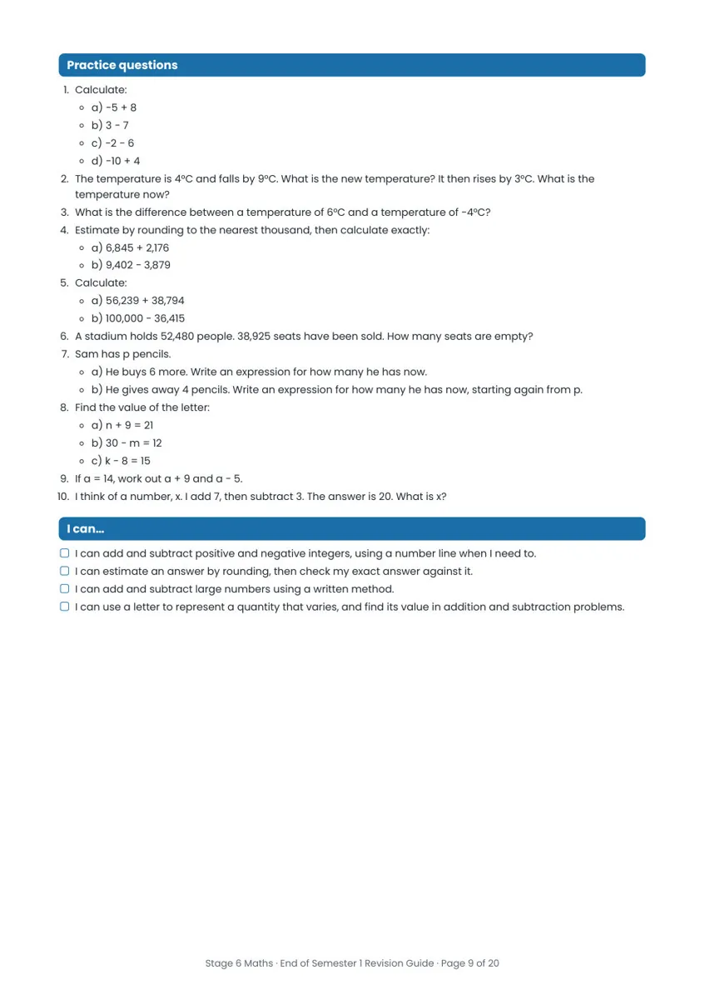
Practice questions
1. Calculate:
a) −5 + 8
b) 3 − 7
c) −2 − 6
d) −10 + 4
2. The temperature is 4°C and falls by 9°C. What is the new temperature? It then rises by 3°C. What is the
temperature now?
3. What is the difference between a temperature of 6°C and a temperature of −4°C?
4. Estimate by rounding to the nearest thousand, then calculate exactly:
a) 6,845 + 2,176
b) 9,402 − 3,879
5. Calculate:
a) 56,239 + 38,794
b) 100,000 − 36,415
6. A stadium holds 52,480 people. 38,925 seats have been sold. How many seats are empty?
7. Sam has p pencils.
a) He buys 6 more. Write an expression for how many he has now.
b) He gives away 4 pencils. Write an expression for how many he has now, starting again from p.
8. Find the value of the letter:
a) n + 9 = 21
b) 30 − m = 12
c) k − 8 = 15
9. If a = 14, work out a + 9 and a − 5.
10. I think of a number, x. I add 7, then subtract 3. The answer is 20. What is x?
I can…
I can add and subtract positive and negative integers, using a number line when I need to.
I can estimate an answer by rounding, then check my exact answer against it.
I can add and subtract large numbers using a written method.
I can use a letter to represent a quantity that varies, and find its value in addition and subtraction problems.
Stage 6 Maths · End of Semester 1 Revision Guide · Page 9 of 20
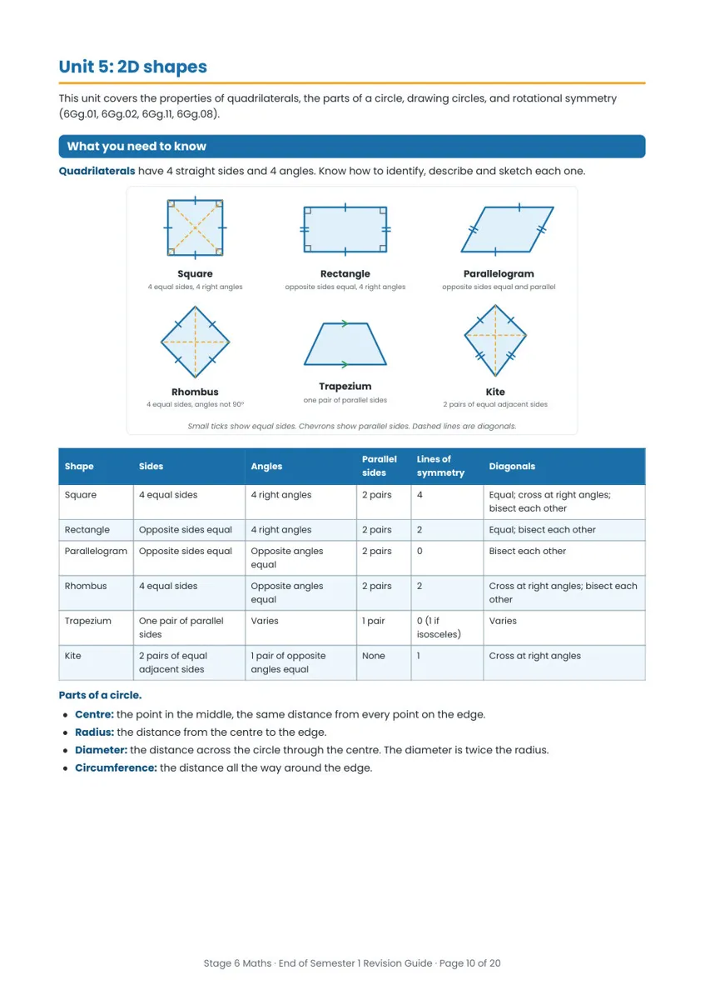
Unit 5: 2D shapes
This unit covers the properties of quadrilaterals, the parts of a circle, drawing circles, and rotational symmetry
(6Gg.01, 6Gg.02, 6Gg.11, 6Gg.08).
What you need to know
Quadrilaterals have 4 straight sides and 4 angles. Know how to identify, describe and sketch each one.
Rectangle
4 equal sides, 4 right angles
Square
opposite sides equal, 4 right angles
Parallelogram
opposite sides equal and parallel
Trapezium
Rhombus
Kite
one pair of parallel sides
4 equal sides, angles not 90°
2 pairs of equal adjacent sides
Small ticks show equal sides. Chevrons show parallel sides. Dashed lines are diagonals.
Parallel
Shape
Sides
Angles
Lines of
Diagonals
symmetry
sides
Square
4 equal sides
4 right angles
2 pairs
4
Equal; cross at right angles;
bisect each other
Rectangle
Opposite sides equal
4 right angles
2 pairs
2
Equal; bisect each other
Parallelogram
Opposite sides equal
Opposite angles
2 pairs
0
Bisect each other
equal
Rhombus
4 equal sides
Opposite angles
2 pairs
2
Cross at right angles; bisect each
equal
other
Trapezium
One pair of parallel
Varies
1 pair
0 (1 if
Varies
sides
isosceles)
Kite
2 pairs of equal
1 pair of opposite
None
1
Cross at right angles
adjacent sides
angles equal
Parts of a circle.
Centre: the point in the middle, the same distance from every point on the edge.
Radius: the distance from the centre to the edge.
Diameter: the distance across the circle through the centre. The diameter is twice the radius.
Circumference: the distance all the way around the edge.
Stage 6 Maths · End of Semester 1 Revision Guide · Page 10 of 20
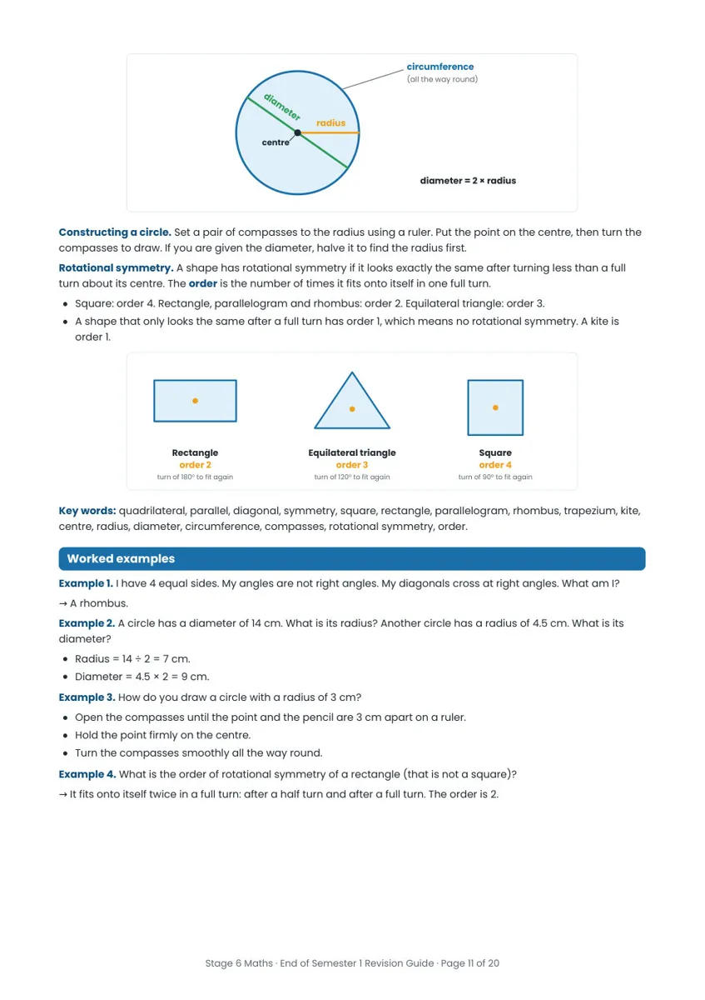
circumference
(all the way round)
diameter
centre
radius
diameter = 2 × radius
Constructing a circle. Set a pair of compasses to the radius using a ruler. Put the point on the centre, then turn the
compasses to draw. If you are given the diameter, halve it to find the radius first.
Rotational symmetry. A shape has rotational symmetry if it looks exactly the same after turning less than a full
turn about its centre. The order is the number of times it fits onto itself in one full turn.
Square: order 4. Rectangle, parallelogram and rhombus: order 2. Equilateral triangle: order 3.
A shape that only looks the same after a full turn has order 1, which means no rotational symmetry. A kite is
order 1.
Rectangle
Equilateral triangle
Square
order 4
order 2
order 3
turn of 180° to fit again
turn of 120° to fit again
turn of 90° to fit again
Key words: quadrilateral, parallel, diagonal, symmetry, square, rectangle, parallelogram, rhombus, trapezium, kite,
centre, radius, diameter, circumference, compasses, rotational symmetry, order.
Worked examples
Example 1. I have 4 equal sides. My angles are not right angles. My diagonals cross at right angles. What am I?
→ A rhombus.
Example 2. A circle has a diameter of 14 cm. What is its radius? Another circle has a radius of 4.5 cm. What is its
diameter?
Radius = 14 ÷ 2 = 7 cm.
Diameter = 4.5 × 2 = 9 cm.
Example 3. How do you draw a circle with a radius of 3 cm?
Open the compasses until the point and the pencil are 3 cm apart on a ruler.
Hold the point firmly on the centre.
Turn the compasses smoothly all the way round.
Example 4. What is the order of rotational symmetry of a rectangle (that is not a square)?
→ It fits onto itself twice in a full turn: after a half turn and after a full turn. The order is 2.
Stage 6 Maths · End of Semester 1 Revision Guide · Page 11 of 20
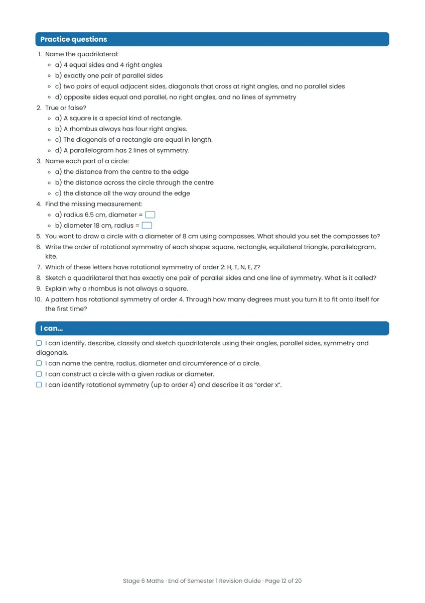
Practice questions
1. Name the quadrilateral:
a) 4 equal sides and 4 right angles
b) exactly one pair of parallel sides
c) two pairs of equal adjacent sides, diagonals that cross at right angles, and no parallel sides
d) opposite sides equal and parallel, no right angles, and no lines of symmetry
2. True or false?
a) A square is a special kind of rectangle.
b) A rhombus always has four right angles.
c) The diagonals of a rectangle are equal in length.
d) A parallelogram has 2 lines of symmetry.
3. Name each part of a circle:
a) the distance from the centre to the edge
b) the distance across the circle through the centre
c) the distance all the way around the edge
4. Find the missing measurement:
a) radius 6.5 cm, diameter =
b) diameter 18 cm, radius =
5. You want to draw a circle with a diameter of 8 cm using compasses. What should you set the compasses to?
6. Write the order of rotational symmetry of each shape: square, rectangle, equilateral triangle, parallelogram,
kite.
7. Which of these letters have rotational symmetry of order 2: H, T, N, E, Z?
8. Sketch a quadrilateral that has exactly one pair of parallel sides and one line of symmetry. What is it called?
9. Explain why a rhombus is not always a square.
10. A pattern has rotational symmetry of order 4. Through how many degrees must you turn it to fit onto itself for
the first time?
I can…
I can identify, describe, classify and sketch quadrilaterals using their angles, parallel sides, symmetry and
diagonals.
I can name the centre, radius, diameter and circumference of a circle.
I can construct a circle with a given radius or diameter.
I can identify rotational symmetry (up to order 4) and describe it as “order x”.
Stage 6 Maths · End of Semester 1 Revision Guide · Page 12 of 20
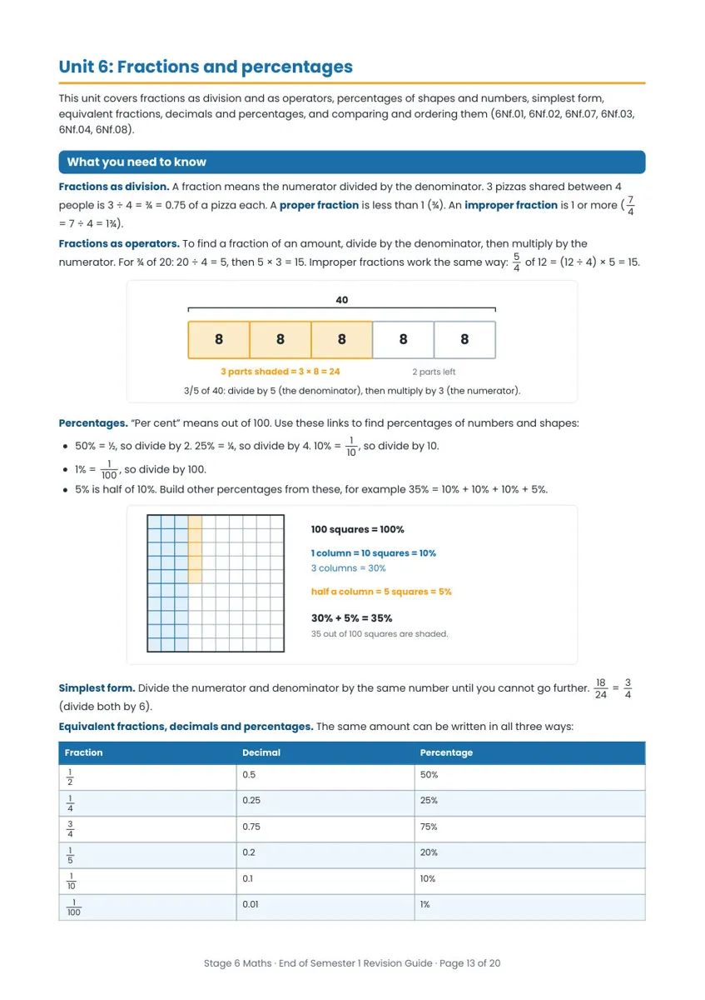
Unit 6: Fractions and percentages
This unit covers fractions as division and as operators, percentages of shapes and numbers, simplest form,
equivalent fractions, decimals and percentages, and comparing and ordering them (6Nf.01, 6Nf.02, 6Nf.07, 6Nf.03,
6Nf.04, 6Nf.08).
What you need to know
Fractions as division. A fraction means the numerator divided by the denominator. 3 pizzas shared between 4
people is 3 ÷ 4 = ¾ = 0.75 of a pizza each. A proper fraction is less than 1 (¾). An improper fraction is 1 or more (7
4
= 7 ÷ 4 = 1¾).
Fractions as operators. To find a fraction of an amount, divide by the denominator, then multiply by the
numerator. For ¾ of 20: 20 ÷ 4 = 5, then 5 × 3 = 15. Improper fractions work the same way: 5
4 of 12 = (12 ÷ 4) × 5 = 15.
40
8
8
8
8
8
3 parts shaded = 3 × 8 = 24
2 parts left
3/5 of 40: divide by 5 (the denominator), then multiply by 3 (the numerator).
Percentages. “Per cent” means out of 100. Use these links to find percentages of numbers and shapes:
50% = ½, so divide by 2. 25% = ¼, so divide by 4. 10% = 1
10, so divide by 10.
1
1% =
100, so divide by 100.
5% is half of 10%. Build other percentages from these, for example 35% = 10% + 10% + 10% + 5%.
100 squares = 100%
1 column = 10 squares = 10%
3 columns = 30%
half a column = 5 squares = 5%
30% + 5% = 35%
35 out of 100 squares are shaded.
Simplest form. Divide the numerator and denominator by the same number until you cannot go further. 18
24 = 3
4
(divide both by 6).
Equivalent fractions, decimals and percentages. The same amount can be written in all three ways:
Fraction
Decimal
Percentage
1
0.5
50%
2
1
0.25
25%
4
3
0.75
75%
4
1
0.2
20%
5
1
0.1
10%
10
1
0.01
1%
100
Stage 6 Maths · End of Semester 1 Revision Guide · Page 13 of 20
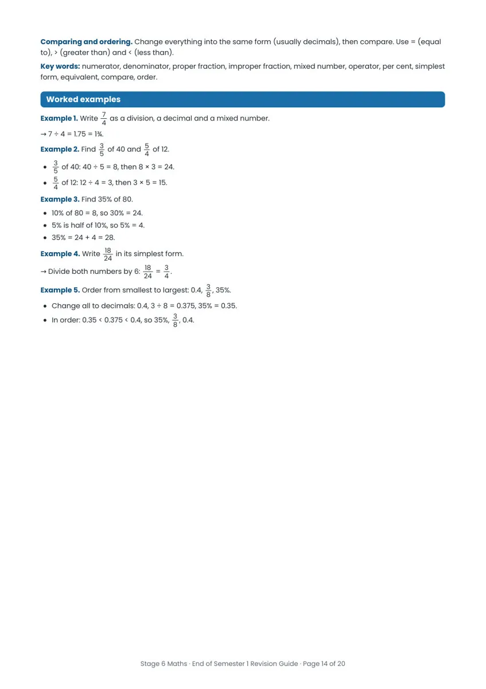
Comparing and ordering. Change everything into the same form (usually decimals), then compare. Use = (equal
to), > (greater than) and < (less than).
Key words: numerator, denominator, proper fraction, improper fraction, mixed number, operator, per cent, simplest
form, equivalent, compare, order.
Worked examples
Example 1. Write 7
4 as a division, a decimal and a mixed number.
→ 7 ÷ 4 = 1.75 = 1¾.
Example 2. Find 3
5 of 40 and 5
4 of 12.
3
5 of 40: 40 ÷ 5 = 8, then 8 × 3 = 24.
5
4 of 12: 12 ÷ 4 = 3, then 3 × 5 = 15.
Example 3. Find 35% of 80.
10% of 80 = 8, so 30% = 24.
5% is half of 10%, so 5% = 4.
35% = 24 + 4 = 28.
Example 4. Write 18
24 in its simplest form.
→ Divide both numbers by 6: 18
24 = 3
4.
Example 5. Order from smallest to largest: 0.4, 3
8, 35%.
Change all to decimals: 0.4, 3 ÷ 8 = 0.375, 35% = 0.35.
In order: 0.35 < 0.375 < 0.4, so 35%, 3
8, 0.4.
Stage 6 Maths · End of Semester 1 Revision Guide · Page 14 of 20
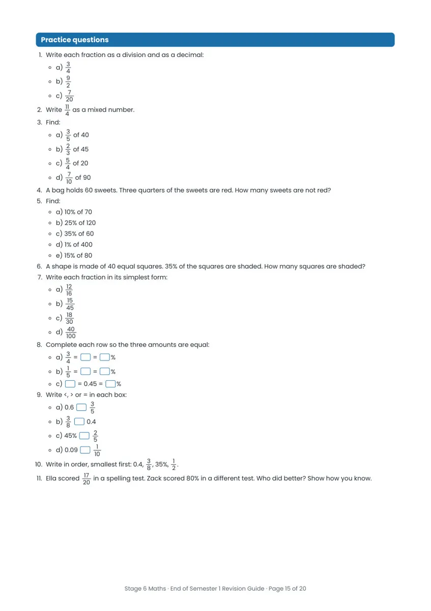
Practice questions
1. Write each fraction as a division and as a decimal:
a) 3
4
b) 9
2
c) 7
20
2. Write 11
4 as a mixed number.
3. Find:
a) 3
5 of 40
b) 2
3 of 45
c) 5
4 of 20
d) 7
10 of 90
4. A bag holds 60 sweets. Three quarters of the sweets are red. How many sweets are not red?
5. Find:
a) 10% of 70
b) 25% of 120
c) 35% of 60
d) 1% of 400
e) 15% of 80
6. A shape is made of 40 equal squares. 35% of the squares are shaded. How many squares are shaded?
7. Write each fraction in its simplest form:
a) 12
16
b) 15
45
c) 18
30
d) 40
100
8. Complete each row so the three amounts are equal:
a) 3
4 =
=
%
b) 1
5 =
=
%
c)
= 0.45 =
%
9. Write <, > or = in each box:
3
a) 0.6
5
b) 3
8
0.4
2
c) 45%
5
1
d) 0.09
10
10. Write in order, smallest first: 0.4, 3
8, 35%, 1
2.
11. Ella scored 17
20 in a spelling test. Zack scored 80% in a different test. Who did better? Show how you know.
Stage 6 Maths · End of Semester 1 Revision Guide · Page 15 of 20
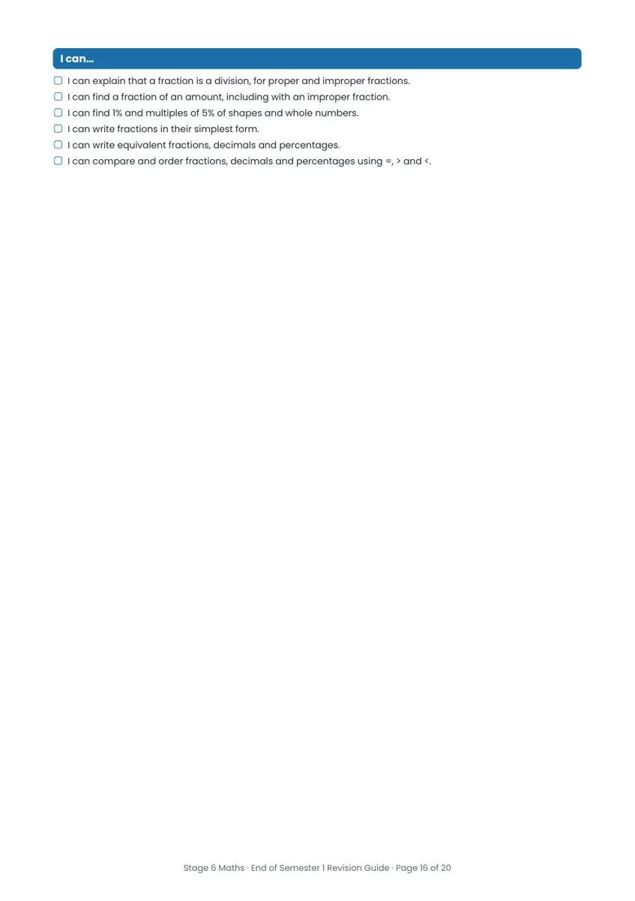
I can…
I can explain that a fraction is a division, for proper and improper fractions.
I can find a fraction of an amount, including with an improper fraction.
I can find 1% and multiples of 5% of shapes and whole numbers.
I can write fractions in their simplest form.
I can write equivalent fractions, decimals and percentages.
I can compare and order fractions, decimals and percentages using =, > and <.
Stage 6 Maths · End of Semester 1 Revision Guide · Page 16 of 20
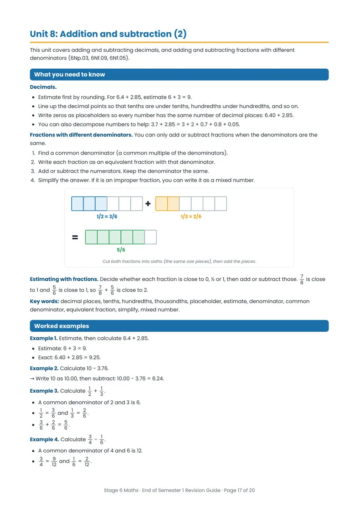
Unit 8: Addition and subtraction (2)
This unit covers adding and subtracting decimals, and adding and subtracting fractions with different
denominators (6Np.03, 6Nf.09, 6Nf.05).
What you need to know
Decimals.
Estimate first by rounding. For 6.4 + 2.85, estimate 6 + 3 = 9.
Line up the decimal points so that tenths are under tenths, hundredths under hundredths, and so on.
Write zeros as placeholders so every number has the same number of decimal places: 6.40 + 2.85.
You can also decompose numbers to help: 3.7 + 2.85 = 3 + 2 + 0.7 + 0.8 + 0.05.
Fractions with different denominators. You can only add or subtract fractions when the denominators are the
same.
1. Find a common denominator (a common multiple of the denominators).
2. Write each fraction as an equivalent fraction with that denominator.
3. Add or subtract the numerators. Keep the denominator the same.
4. Simplify the answer. If it is an improper fraction, you can write it as a mixed number.
+
1/2 = 3/6
1/3 = 2/6
=
5/6
Cut both fractions into sixths (the same size pieces), then add the pieces.
Estimating with fractions. Decide whether each fraction is close to 0, ½ or 1, then add or subtract those. 7
to 1 and 5
6 is close to 1, so 7
8 + 5
6 is close to 2.
Key words: decimal places, tenths, hundredths, thousandths, placeholder, estimate, denominator, common
denominator, equivalent fraction, simplify, mixed number.
Worked examples
Example 1. Estimate, then calculate 6.4 + 2.85.
Estimate: 6 + 3 = 9.
Exact: 6.40 + 2.85 = 9.25.
Example 2. Calculate 10 − 3.76.
→ Write 10 as 10.00, then subtract: 10.00 − 3.76 = 6.24.
Example 3. Calculate 1
2 + 1
3.
A common denominator of 2 and 3 is 6.
2 = 3
1
6 and 1
3 = 2
6.
6 + 2
3
6 = 5
6.
Example 4. Calculate 3
4 − 1
6.
A common denominator of 4 and 6 is 12.
4 = 9
3
12 and 1
6 = 2
12.
8 is close
Stage 6 Maths · End of Semester 1 Revision Guide · Page 17 of 20
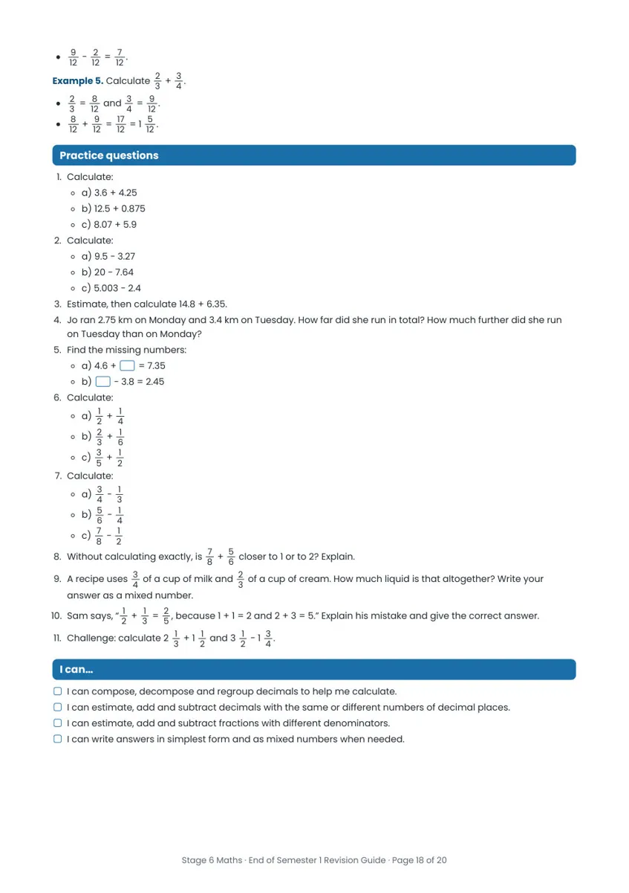
12 − 2
9
12 = 7
12.
Example 5. Calculate 2
3 = 8
2
12 and 3
4 = 9
12.
12 + 9
8
12 = 17
12 = 1 5
12.
Practice questions
1. Calculate:
a) 3.6 + 4.25
b) 12.5 + 0.875
c) 8.07 + 5.9
2. Calculate:
a) 9.5 − 3.27
b) 20 − 7.64
c) 5.003 − 2.4
3. Estimate, then calculate 14.8 + 6.35.
4. Jo ran 2.75 km on Monday and 3.4 km on Tuesday. How far did she run in total? How much further did she run
on Tuesday than on Monday?
5. Find the missing numbers:
a) 4.6 +
= 7.35
b)
− 3.8 = 2.45
6. Calculate:
a) 1
2 + 1
4
b) 2
3 + 1
6
5 + 1
2
7. Calculate:
c) 3
a) 3
4 − 1
3
b) 5
6 − 1
4
c) 7
8 − 1
2
8. Without calculating exactly, is 7
8 + 5
6 closer to 1 or to 2? Explain.
9. A recipe uses 3
4 of a cup of milk and 2
3 of a cup of cream. How much liquid is that altogether? Write your
answer as a mixed number.
10. Sam says, “1
2 + 1
3 = 2
5, because 1 + 1 = 2 and 2 + 3 = 5.” Explain his mistake and give the correct answer.
11. Challenge: calculate 2 1
3 + 1 1
2 and 3 1
2 − 1 3
4.
I can…
I can compose, decompose and regroup decimals to help me calculate.
I can estimate, add and subtract decimals with the same or different numbers of decimal places.
I can estimate, add and subtract fractions with different denominators.
I can write answers in simplest form and as mixed numbers when needed.
3 + 3
4.
Stage 6 Maths · End of Semester 1 Revision Guide · Page 18 of 20
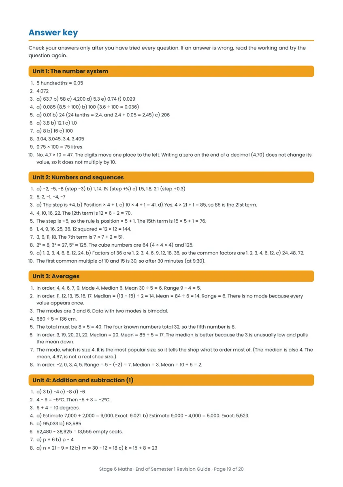
Answer key
Check your answers only after you have tried every question. If an answer is wrong, read the working and try the
question again.
Unit 1: The number system
1. 5 hundredths = 0.05
2. 4.072
3. a) 63.7 b) 58 c) 4,200 d) 5.3 e) 0.74 f) 0.029
4. a) 0.085 (8.5 ÷ 100) b) 100 (3.6 ÷ 100 = 0.036)
5. a) 0.01 b) 24 (24 tenths = 2.4, and 2.4 + 0.05 = 2.45) c) 206
6. a) 3.8 b) 12.1 c) 1.0
7. a) 8 b) 16 c) 100
8. 3.04, 3.045, 3.4, 3.405
9. 0.75 × 100 = 75 litres
10. No. 4.7 × 10 = 47. The digits move one place to the left. Writing a zero on the end of a decimal (4.70) does not change its
value, so it does not multiply by 10.
Unit 2: Numbers and sequences
1. a) −2, −5, −8 (step −3) b) 1, 1¼, 1½ (step +¼) c) 1.5, 1.8, 2.1 (step +0.3)
2. 5, 2, −1, −4, −7
3. a) The step is +4. b) Position × 4 + 1. c) 10 × 4 + 1 = 41. d) Yes. 4 × 21 + 1 = 85, so 85 is the 21st term.
4. 4, 10, 16, 22. The 12th term is 12 × 6 − 2 = 70.
5. The step is +5, so the rule is position × 5 + 1. The 15th term is 15 × 5 + 1 = 76.
6. 1, 4, 9, 16, 25, 36. 12 squared = 12 × 12 = 144.
7. 3, 6, 11, 18. The 7th term is 7 × 7 + 2 = 51.
8. 2³ = 8, 3³ = 27, 5³ = 125. The cube numbers are 64 (4 × 4 × 4) and 125.
9. a) 1, 2, 3, 4, 6, 8, 12, 24. b) Factors of 36 are 1, 2, 3, 4, 6, 9, 12, 18, 36, so the common factors are 1, 2, 3, 4, 6, 12. c) 24, 48, 72.
10. The first common multiple of 10 and 15 is 30, so after 30 minutes (at 9:30).
Unit 3: Averages
1. In order: 4, 4, 6, 7, 9. Mode 4. Median 6. Mean 30 ÷ 5 = 6. Range 9 − 4 = 5.
2. In order: 11, 12, 13, 15, 16, 17. Median = (13 + 15) ÷ 2 = 14. Mean = 84 ÷ 6 = 14. Range = 6. There is no mode because every
value appears once.
3. The modes are 3 and 6. Data with two modes is bimodal.
4. 680 ÷ 5 = 136 cm.
5. The total must be 8 × 5 = 40. The four known numbers total 32, so the fifth number is 8.
6. In order: 3, 19, 20, 21, 22. Median = 20. Mean = 85 ÷ 5 = 17. The median is better because the 3 is unusually low and pulls
the mean down.
7. The mode, which is size 4. It is the most popular size, so it tells the shop what to order most of. (The median is also 4. The
mean, 4.67, is not a real shoe size.)
8. In order: −2, 0, 3, 4, 5. Range = 5 − (−2) = 7. Median = 3. Mean = 10 ÷ 5 = 2.
Unit 4: Addition and subtraction (1)
1. a) 3 b) −4 c) −8 d) −6
2. 4 − 9 = −5°C. Then −5 + 3 = −2°C.
3. 6 + 4 = 10 degrees.
4. a) Estimate 7,000 + 2,000 = 9,000. Exact: 9,021. b) Estimate 9,000 − 4,000 = 5,000. Exact: 5,523.
5. a) 95,033 b) 63,585
6. 52,480 − 38,925 = 13,555 empty seats.
7. a) p + 6 b) p − 4
8. a) n = 21 − 9 = 12 b) m = 30 − 12 = 18 c) k = 15 + 8 = 23
Stage 6 Maths · End of Semester 1 Revision Guide · Page 19 of 20
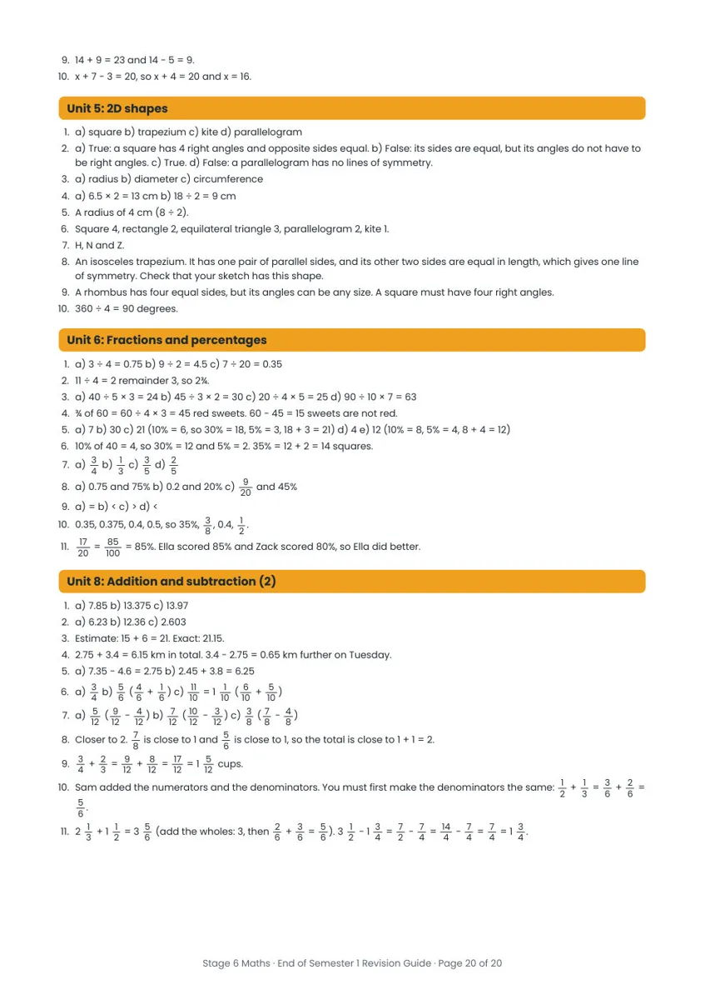
9. 14 + 9 = 23 and 14 − 5 = 9.
10. x + 7 − 3 = 20, so x + 4 = 20 and x = 16.
Unit 5: 2D shapes
1. a) square b) trapezium c) kite d) parallelogram
2. a) True: a square has 4 right angles and opposite sides equal. b) False: its sides are equal, but its angles do not have to
be right angles. c) True. d) False: a parallelogram has no lines of symmetry.
3. a) radius b) diameter c) circumference
4. a) 6.5 × 2 = 13 cm b) 18 ÷ 2 = 9 cm
5. A radius of 4 cm (8 ÷ 2).
6. Square 4, rectangle 2, equilateral triangle 3, parallelogram 2, kite 1.
7. H, N and Z.
8. An isosceles trapezium. It has one pair of parallel sides, and its other two sides are equal in length, which gives one line
of symmetry. Check that your sketch has this shape.
9. A rhombus has four equal sides, but its angles can be any size. A square must have four right angles.
10. 360 ÷ 4 = 90 degrees.
Unit 6: Fractions and percentages
1. a) 3 ÷ 4 = 0.75 b) 9 ÷ 2 = 4.5 c) 7 ÷ 20 = 0.35
2. 11 ÷ 4 = 2 remainder 3, so 2¾.
3. a) 40 ÷ 5 × 3 = 24 b) 45 ÷ 3 × 2 = 30 c) 20 ÷ 4 × 5 = 25 d) 90 ÷ 10 × 7 = 63
4. ¾ of 60 = 60 ÷ 4 × 3 = 45 red sweets. 60 − 45 = 15 sweets are not red.
5. a) 7 b) 30 c) 21 (10% = 6, so 30% = 18, 5% = 3, 18 + 3 = 21) d) 4 e) 12 (10% = 8, 5% = 4, 8 + 4 = 12)
6. 10% of 40 = 4, so 30% = 12 and 5% = 2. 35% = 12 + 2 = 14 squares.
7. a) 3
4 b) 1
3 c) 3
5 d) 2
5
8. a) 0.75 and 75% b) 0.2 and 20% c) 9
20 and 45%
9. a) = b) < c) > d) <
10. 0.35, 0.375, 0.4, 0.5, so 35%, 3
8, 0.4, 1
2.
20 = 85
17
11.
100 = 85%. Ella scored 85% and Zack scored 80%, so Ella did better.
Unit 8: Addition and subtraction (2)
1. a) 7.85 b) 13.375 c) 13.97
2. a) 6.23 b) 12.36 c) 2.603
3. Estimate: 15 + 6 = 21. Exact: 21.15.
4. 2.75 + 3.4 = 6.15 km in total. 3.4 − 2.75 = 0.65 km further on Tuesday.
5. a) 7.35 − 4.6 = 2.75 b) 2.45 + 3.8 = 6.25
6. a) 3
4 b) 5
6 (4
6 + 1
6) c) 11
10 = 1 1
10 (6
10 + 5
10)
7. a) 5
12 (9
12 − 4
12) b) 7
12 (10
12 − 3
12) c) 3
8 (7
8 − 4
8)
8. Closer to 2. 7
8 is close to 1 and 5
6 is close to 1, so the total is close to 1 + 1 = 2.
9. 3
4 + 2
3 = 9
12 + 8
12 = 17
12 = 1 5
12 cups.
10. Sam added the numerators and the denominators. You must first make the denominators the same: 1
2 + 1
3 = 3
6 + 2
6 =
5
6.
11. 2 1
3 + 1 1
2 = 3 5
6 (add the wholes: 3, then 2
6 + 3
6 = 5
6). 3 1
2 − 1 3
4 = 7
2 − 7
4 = 14
4 − 7
4 = 7
4 = 1 3
4.
Stage 6 Maths · End of Semester 1 Revision Guide · Page 20 of 20